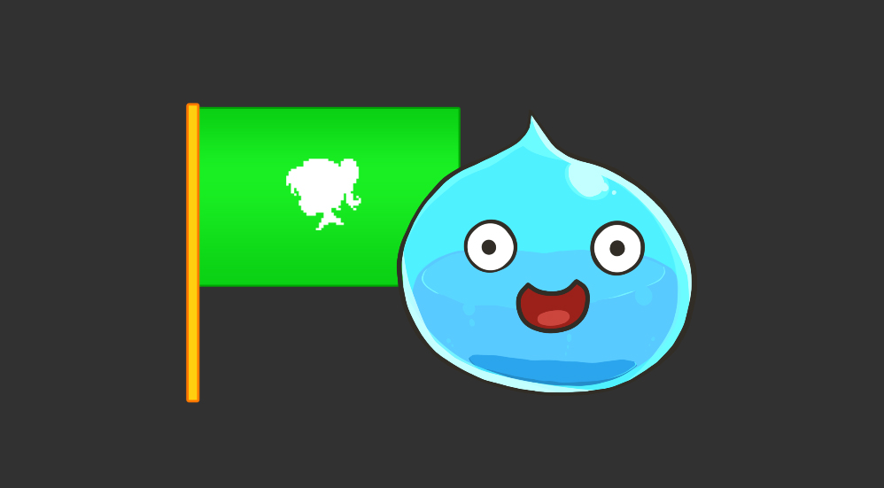
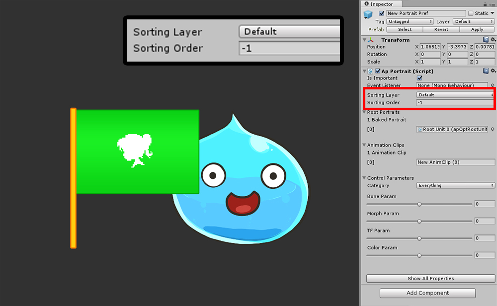
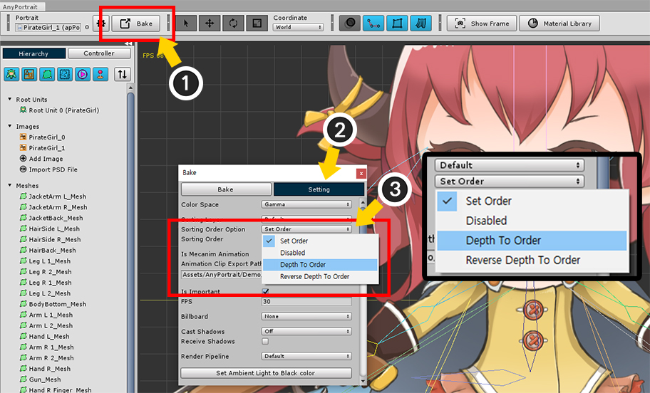
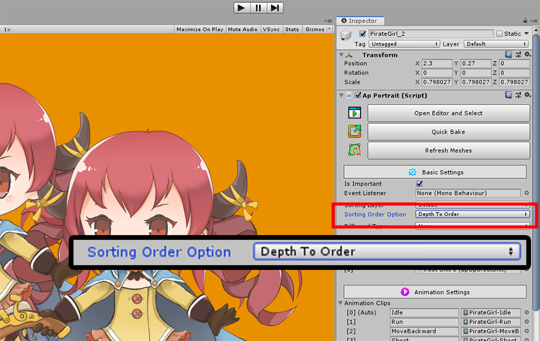
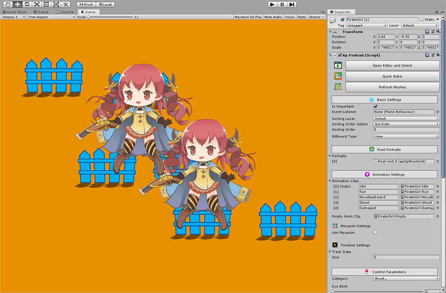
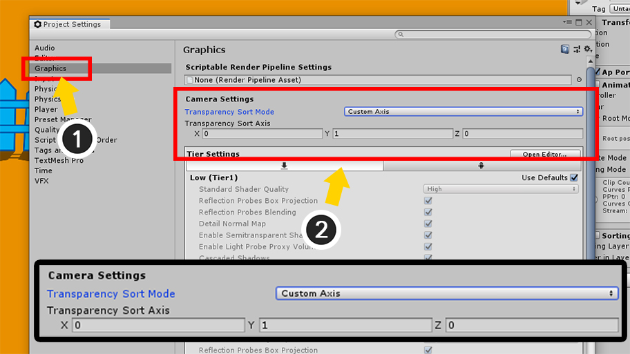
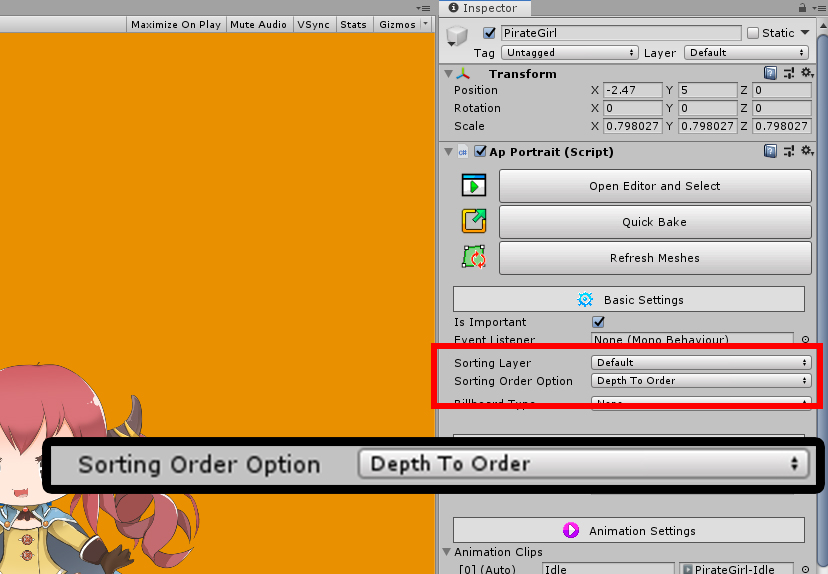
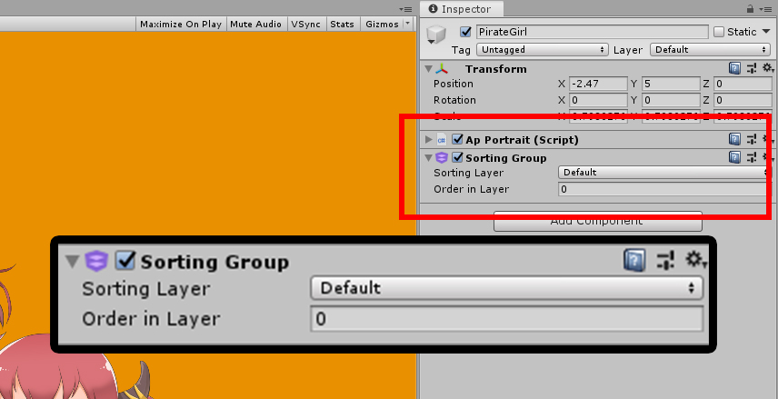

AnyPortrait > マニュアル > 「Sorting Layer/Order」設定
「Sorting Layer/Order」設定
1.3.0
ゲームを実行すると、Unityは複数のGameObjectを1つずつレンダリングします。
レンダリングの順序を設定することは非常に重要です。
一般に、順序はカメラからの距離によって決定されますが、順序を直接指定することは可能です。
ユニティが提供する「Sorting Layer」と「Sorting Order」を使用してレンダリング順序を決定することができます。
スクリプトドキュメントについては、関連ページを参照してください

Bakeダイアログボックスで「Sorting Layer」と「Sorting Order」を設定できます。
「Sorting Layer」は、「Edit > Project Settings > Tags and Layers」で設定できます。
「Sorting Order」には整数型の値があります。 デフォルト値は0です。

「Sorting Layer / Order」機能をテストするために、ゲームオブジェクトの隣に「Sprite Renderer」を配置しました。
2つのゲームオブジェクトは、同じ「Sorting Layer」を持ちます。
「Sprite Renderer」の 「Sorting Order」は0です。

ゲームの実行中にインスペクタで「Sorting Layer」と「Sorting Order」を変更することができます。
ゲームの実行中に「Sorting Order」を1に設定すると、スライムが前面からレンダリングされます。

逆に、「Sprite Renderer」の「Sorting Order」より小さい-1を入力すると、スライムが背面からレンダリングされます。
Sorting Group
AnyPortrait v1.1.8から「Sorting Group」機能をサポートします。
「Sorting Group」機能を利用すれば、グループに存在するオブジェクトのレンダリング順序を決定することができます。
このページでは、二つの場合の問題を「Sorting Group」を利用して解決する過程を説明します。

キャラクターが重なっている場合の例です。
AnyPortraitで製作された文字のように複数の「Mesh Renderer」や「Sprite Renderer」で構成されたキャラクターが重なり合う場合には、キャラクター間のレンダリング順序が定まっておらず、複雑な形でレンダリングがされます。
この問題は、上記の「Sorting Order」や「Sorting Layer」を別の方法で入力して処理することができますが、最良の方法は、「Sorting Group」を使用することです。

「Sorting Group」を利用する前にAnyPortraitで作られたキャラクターの設定を変更する必要があります。
(1) エディタを開いて、「Bakeボタン」を押してダイアログを開きます。
(2) 「Settingタブ」を選択します。
(3) 「Sorting Order Option」項目の値を「Depth To Order」に変更します。
v1.1.8で追加された設定である「Sorting Order Option」は、それぞれのメッシュの「Order」がどのような値を持つかを決定します。
オプションの内容は、次のとおりです。
- Set Order : 従来の方式です。「Sorting Order」の項目の値がすべてのメッシュに指定されます。
- Disabled : Bakeする際、メッシュのOrderを設定しません。
- Depth To Order : 後ろから前にOrderが増加します。
- Reverse Depth To Order : 前から後ろOrderが増加します。
「Sorting Group」を利用していなくても、必要に応じて「Sorting Order Option」を設定ください。
「Sorting Order Option」を「Depth To Order」や「Reverse Depth To Order」に設定すると、
「Depth」が増加する間隔を設定できる「Order Per Depth」オプションがv1.3.0に追加されました。

「Inspector UI」から「Sorting Order Option」を設定することもできます。

AnyPortraitで作ったキャラクターに「Sorting Group」コンポーネントを追加します。
(1) 「Add Component」ボタンを押します。
(2) 「Sorting Group」コンポーネントを選択して追加します。 （検索して見つけることをお勧めします。）

今メッシがグループ単位でレンダリング順序が決定されて表示されます。

第二の例です。
この例では、キャラクターとフェンスが配置されたシーンです。
この例では、カメラが上から下を眺める2Dゲームで一般的に使用される構成です。
上に位置するオブジェクトが後方、下に位置するオブジェクトが前のレンダリングされます。
しかし、現在では、オブジェクトのY座標とは無関係に、レンダリングの順序が決定されます。
スクリプトでいちいち「Sorting Order」を変更する方法もあるが、最も便利な方法は、プロジェクトの設定を変更することです。

(1) 「Project Settings」を開き、「Graphics」を選択します。
(2) Camera Settingsの「Transparency Sort Mode」を「Custom Axis」に変更し、
「Transparency Sort Axis」を(0, 1, 0)に変更します。
今レンダリング順序を決定する基準がZ軸で「Y軸」に変更されました。

「Sorting Group」を適用してみましょう。
キャラクターを選択して、「Bakeダイアログ」または「Inspector UI」から「Sorting Order Option」を「Depth To Order」に変更します。

キャラクターに「Sorting Group」コンポーネントを追加します。

キャラクターとフェンスが上から下へ順にレンダリングがされます。